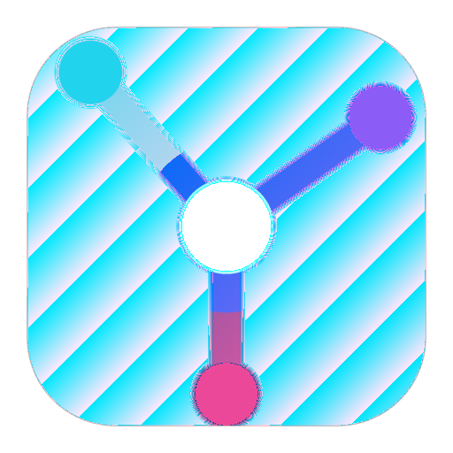
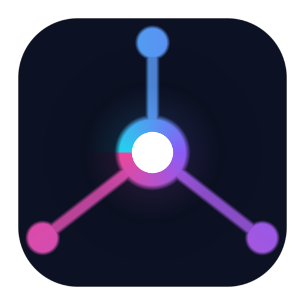
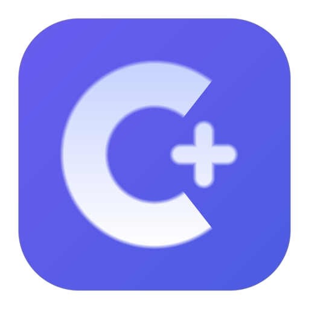

codepluse 图标候选方案
挑一个（或说组合意见），我把它接进正式管线并生成全套尺寸。
A · 汇聚（浅底渐变流线）

浅色页 / 深色任务栏 · 512/128/64/32/16
B · 星枢（深底霓虹）

浅色页 / 深色任务栏 · 512/128/64/32/16
C · C+ 徽章（品牌渐变）

浅色页 / 深色任务栏 · 512/128/64/32/16
D · 现行枢纽环（对照）
浅色页 / 深色任务栏 · 512/128/64/32/16